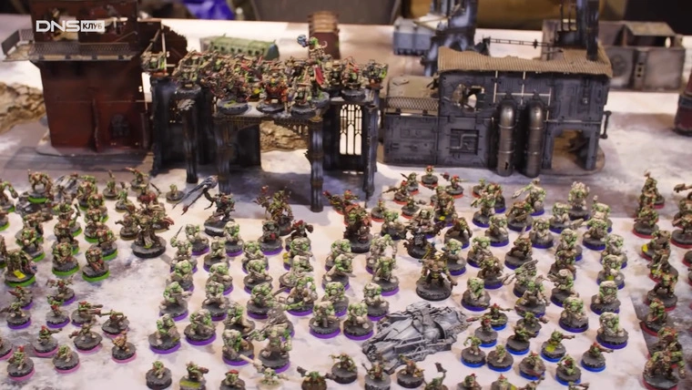
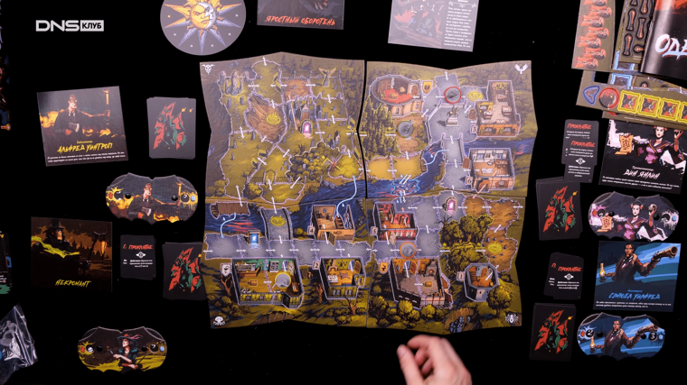
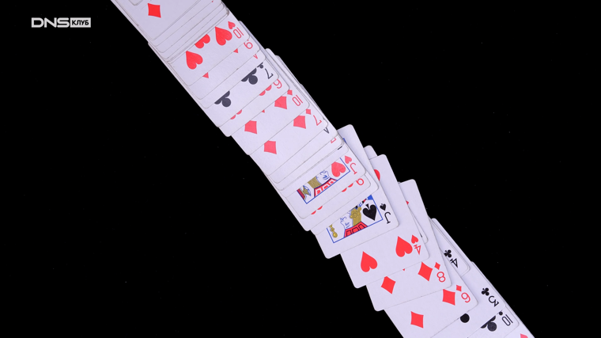

Настольные игры — популярный способ совместного времяпрепровождения, количество поклонников которого растет с каждым годом. Дело в том, что настольные игры разнообразны, увлекательны и связаны с живым общением, которого нам нередко не хватает. При этом настолки радикально отличаются друг от друга по принципу построения, так называемым игровым механикам. С тем, как устроены и работают настольные игры мы сейчас и разберемся.
Настольные игры сложно распределить по жанрам. Одну и ту же игру можно отнести к семейным, стратегическим, кооперативным и так далее. Поэтому поговорим о том, из чего они состоят. Это поможет понять, как их можно классифицировать, а заодно разобраться, чем, например, отличается «еврогейм» от «америтреша», как называют поклонники настолок игры со стратегической составляющей и основанные на случайности.

Казалось бы, на вопрос, из чего состоят настольные игры, следует отвечать: из игрового поля, кубиков, фишек, карточек. Но не все так просто. Поле, фишки, кубики и карточки — это, конечно, важно. Но на самом деле это только внешний антураж. А мы говорим о том, как устроены игры внутри. Тогда выходит, что настольная игра в целом состоит из следующих элементов: игровой механики, сеттинга, сюжета и атмосферы.
Эти четыре элемента что-то вроде «трех китов», на которых и строятся все настолки. При этом далеко не всегда эти элементы используются в полном объеме. Есть игры, в которых именно сеттинг и сюжет являются основными моментами (в основном это стратегические, ролевые и приключенческие игры), а есть и такие, в которых основное — это механика, а сюжета минимум или вообще нет, как в домино.
Чтобы понять, как и почему именно так устроены настольные игры, следует немного обратиться к их истории. Первые настольные игры представляли собой абстрактные развлечения. Это была идея в чистом виде без всяких сеттингов и сюжетов. Причем появились они довольно давно. Можно с уверенностью говорить о том, что в настольные игры играли как минимум с IV века до нашей эры. К одним из первых настольных игр можно отнести, например, кости. Чуть позже появились прототипы домино и шахмат.
Во многих современных настолках применяются те или иные элементы первых игр. Карты, формирование игрового поля по ходу игры, рассчет, тактика или простая случайность — все это вы найдете до сих пор.
Самый наглядный пример игр, основанных на случайности — кости. Игроки бросают их, у кого выпало большее число, тот и победил. Кости — квитэссенция случайности и везения.
Причем механика этой игры активно используется до сих пор. И не только в казино, но и во множестве настолок. Особенно в играх, которые среди фанатов настолок принято называть «америтреш». Их механика не требует особенных размышлений, все зависит от того, как лягут брошенные кубики. Почему-то принято считать, что эта игровая механика популярна в Америке.
В качестве примера америтреша можно назвать RPG Dungeons & Dragons. Здесь во многих игровых моментах используется бросок кубиков с разным количеством граней — вплоть до 20. Кроме того, на отдельные кубики могут наноситься не только числовые значения, но и какие-то изображения, необходимые для конкретной игры.
Примером другой игровой механики, в которой результат основан не только на случайности, но и на расчете, может послужить домино. Несмотря на то, что стартовый набор игрок получает случайным образом, чем меньше остается в игре фишек, тем больше возможностей точно просчитать дальнейшие действия.
По этой причине — домино относится к настолкам, в которых механика построена на случайности в сочетании с частичным расчетом. При этом домино — это еще и игра, в которой игровое поле формируется по ходу игры. Некоторые современные настолки также используют похожий механизм, как, например, «Каркассон».
Еще одним предком современных настольных игр являются шахматы. Это — чистая тактика и стратегия, максимально очищенная от элемента случайности. В шахматах игроки четко знают, как фигуры расположены в начале игры, видят, как они перемещаются по ходу партии. Следовательно, у их есть возможность точно просчитать свои действия. И никакой случайности тут нет места — мастерство против мастерства.
Современные потомки шахмат в мире настольных игр — это стратегические игры, в основном различные варгеймы. В них не обязательно есть игровое поле, но есть четкий свод правил, по которым перемещаются и взаимодействуют различные игровые элементы. В большинстве современные варгеймы развиваются не в сторону усложнения или радикального изменения игровых механик, а в сторону расширения количества и украшения используемых в игре фигурок. Характерным примером этого вида настолок являются Warhammer 40K и Warhammer Fantasy Battles.
Карточные игры — это отдельная большая категория игр, берущая свое начало с игральных карт и различных игр с ними. Надо отметить, что карточные игры могут как полностью основываться на случайности, так и на точном или частичном расчете. К первому типу относится Black Jack, баккара и прочие распространенные в казино игры. Ко второму — преферанс или бридж, по которому даже проводятся чемпионаты мира.
В современных настольных играх карточки с картинками часто используются как один из игровых элементов, как в настолке «Билет на поезд», или основной и единственный элемент, как, например, в «Свинтусе». Соответственно, и карточки-карты в игре используются разными способами. В одних случаях они генерируют случайные события, фактически заменяя собой бросок кубика, в других используются для построения стратегических комбинаций.
Теперь посмотрим подробнее на не менее важные составляющие настольных игр — их сеттинг и атмосферу. Под сеттингом принято понимать общий антураж игры. Это время, в которое происходят события, место и обстоятельства. Например, «Билет на поезд. Европа» посвящен строительству железных дорог в Европе в конце XIX — начале XX века. И весь игровой антураж — карточки, игровое поле и прочее направлено на то, чтобы создать соответствующую среду. Поэтому получается, что, например, мир фентези-приключений или мир пиратов — это разные сеттинги, но игровая механика при этом может быть похожей.
Игровая атмосфера же — это формируемые игрой эмоции. Ведь если взять «Ужас Аркхэма» по вселенной Лавкрафта, то атмосфера в такой игре формируется суровой и напряженной, так как перед нами — триллер. В то же время, совместное приключение в другом антураже, например, космическом, вполне может быть веселым детским развлечением.
Наличие развитого сеттинга и атмосферы отличает абстрактные настольные игры, в которых во главу ставится механика, от имитационных, где в основе лежат формируемые эмоции и погружение в созданный игрой антураж. Важно отметить, что наличие интересного сеттинга и атмосферы для большего числа любителей компьютерных игр является даже более важным, чем продвинутой игровой механики.
Как в кино или книге, сюжет в настольной игре нужен для того, чтобы развитие событий подчинялось какому-то смыслу. В ряде игр, например, в детективах или ролевых, он является обязательной и важнейшей частью геймплея. В абстрактных играх сюжет не так уж и нужен.
При этом в одних играх, например, в Dungeons & Dragons, сюжет четко прописан заранее и гейммастер ведет вас по нему. А в других, как в Bang или в «Мафии» он рождается по ходу игры и каждый раз несколько отличается.
Игровая механика — это набор алгоритмов, антуража и формирующих правил, по которым работает настольная игра. Это уникальный микс, в котором нередко сочетается случайность и расчет, имитация фантазийного мира с некоторыми допущениями.
Если в настольной игре остаются только правила и механика, то это — абстрактное развлечение, в котором ничего не отвлекает от основной сути и задачи игры. Например, в шахматах — поставить мат противнику. Такие игры интересны тем, что позволяют отточить свою логику, ловкость, тактические способности или испытать азарт.
Но сейчас большинству любителей настольных игр больше нравятся имитационные соперничества, в которые есть не только интересный алгоритм, но и сеттинг с антуражем. Игрокам нравится не просто сражаться друг с другом, а представлять себя капитанами звездолетов или средневековыми лордами и героями. Это позволяет отвлечься от обыденности и весело провести время в компании.
Настольные игры различаются между собой еще и по виду взаимодействия между игроками. Их два: игроки могут вести борьбу друг против друга, как в «Манчкине», или против игры, как в «Ужасе Аркхэма» или «Андоре».
Как правило, абстрактные игры — это почти всегда соперничество, а вот имитационные настолки с погружением нередко представляют собой если не полную кооперацию, то дают широкие возможности для взаимодействия. Более того, без взаимодействия и сотрудничества с другими игроками, скорее всего, победить не получится.
Наличие игрового поля в настолках тоже вариативно. Если оно есть, то является центром игровых событий. Это упрощает визуализацию, и, в некоторых случая, работает на атмосферу. В играх типа «Мафии» или «Доббля» игрового поля нет в принципе. В других оно формируется по мере игры, например, как в «Каркассоне», где игроки постепенно доставляют тайлы, формируя новую, каждый раз другую карту средневековой страны.
При выборе настолок момент с игровым полем надо обязательно учитывать. Потому что если игра большая, как «Сумерки Империи», вы вряд ли поместите ее на небольшом столе. А вот небольшую настолку вроде «Доббля» или «Свинтуса» вполне можно брать с собой в далекое путешествие.
Все настолки можно разделить на игры с полной и неполной информацией. Причем во втором случае она может быть нулевой, как это происходит в костях, если каждый бросок делается снова для всех принимающих участие в партии кубиков. В этом случае результат каждый раз обнуляется, а что выпадет при следующем броске — абсолютно неизвестно.
Пример неполной информации — вытягивание карт. Сначала информация неизвестна. Но по мере уменьшения колоды, появляется все большая вероятность просчитать, что придет в руку на следующем ходу. То есть, задействована не только удача, но и умение считать.
Соответственно, в одних играх приходится полагаться на удачу, так как информации нет или ее мало. В других в начале игры информации недостаточно, но постепенно ее становится все больше и больше.
В основном сейчас распространены гибридные настольные игры, в которых нет какой-то определенной механики в чистом виде. Это связано с тем, что эти развлечения прошли большой путь. К первоначальным абстрактным механикам стали добавлять сеттинги, атмосферу и сюжет. Это сделало игры интереснее и разнообразнее. В результате сейчас существует множество довольно сложных и разветвленных настольных игр с занятным сеттингом и сложным, нелинейным сюжетом.
Настольные игры становятся все более популярны. Поэтому разработчики из-за конкуренции и стремления занять свою долю рынка постоянно придумывают что-то новое и необычное — то, что способно заинтересовать и привлечь новых любителей настолок.